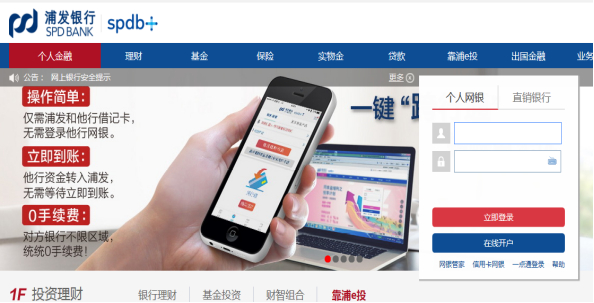
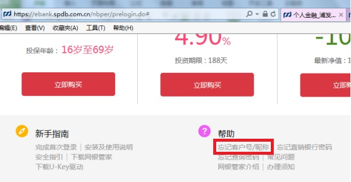
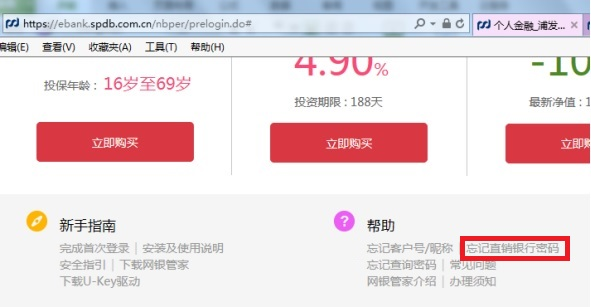

一、网银导入只支持网上银行的账号登录
本平台的网银导入服务只支持浦发银行个人网上银行登录，即您注册该网银的用户名、证件号码，不支持手机银行登录和企业网银登录。
浦发银行个人网上银行登录入口：https://ebank.spdb.com.cn/nbper/prelogin.do
二、如何确认自己登录账号、登录密码的有效性
请访问浦发银行官网（https://ebank.spdb.com.cn/nbper/prelogin.do）进行登录验证。如果能登录成功，请将相应登录账号和登录密码在本平台进行登录即可完成网银导入。
三、我使用U盾、数字证书登录网银怎么办
目前本平台暂不支持这类网银导入，建议您在线开通浦发银行个人网上银行，如有疑惑，可致电浦发银行客服：95528 咨询。
四、忘记网银登录用户名怎么办
请直接访问浦发银行个人网上银行，点击【忘记客户号/昵称】进行找回客户号/昵称操作。
【忘记客户号/昵称】直达链接：https://ebank.spdb.com.cn/nbper/NoLoginPageDisplay.do?_viewReferer=topdefault,basic/ForgetUserInfoCheckIdNo
五、忘记网银登录密码怎么办
1、如您名下仅有浦发电子账户，请直接访问浦发银行个人网上银行，点击【忘记直销银行密码】进行重置密码操作。
2、如您已经办理过浦发借记卡，请至浦发柜面重置查询密码。
六、常见问题
Q：提示【用户或密码无效】，怎么办？
1、请确认您的网上银行（与手机银行不同）已经开通并激活，您可以联系客服热线（95528）确认是否已经成功开通网上银行，如若未开通网银，请携带相关证件、银行卡等物品到邻近网点开通网上银行服务。
2、如果已在柜台开通网银，请确认您输入的账号有效，建议您可以在官网（https://ebank.spdb.com.cn/nbper/prelogin.do）进行登录验证，如若忘记密码且您名下仅有浦发电子账户，请直接访问浦发银行个人网上银行，点击【忘记直销银行密码】进行重置密码操作，如您已经办理过浦发借记卡，请至浦发柜面重置查询密码。
3、如果能在官网正常登录，仍然无法正常导入，可能是服务器繁忙，您可以稍后再试。
Q：未收到【短信验证码】，怎么办？
1、请确认当前手机号是开通网上银行时填写的手机号，如若不是，请携带相关证件、银行卡等物品到邻近网点办理更换手机号业务。
2、短信发送时可能存在延迟现象，请您耐心等待。
3、如果确认当前手机号是开通网上银行时填写的手机号，仍无发正常发送短信验证码，可能是发送短信过于频繁，您可以稍后再试。